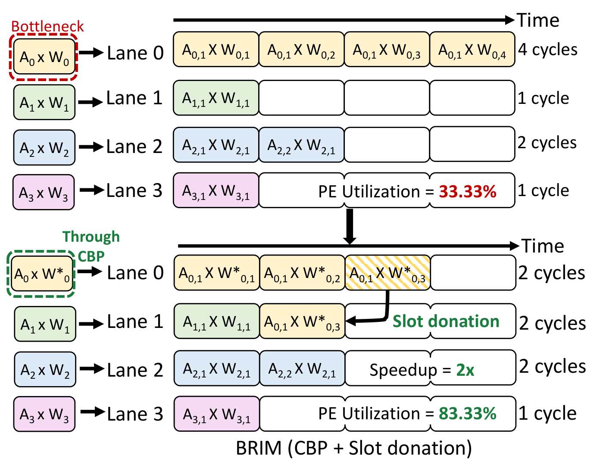

BRIM: Workload-Balanced Dual-Sided Bit-Serial Sparse Inference Accelerator
Skipping zero bits on both operands makes bit-serial accelerators much faster, but it also makes lanes finish at very different times. BRIM balances the work offline and absorbs what is left at runtime, so the processing elements stay busy.


The problem
Bit-serial computation and the single-operand ceiling
A bit-serial accelerator multiplies by breaking one operand into its bits and processing one bit per cycle. Zero bits contribute nothing, so they can be skipped, and the work for a value depends on its number of non-zero terms rather than its full bitwidth. The processing elements are also much smaller than bit-parallel multipliers, so more of them fit in the same area. Prior designs such as Stripes, Pragmatic, Bitlet, BBS and BitL exploit this on one operand only, which leaves the other operand fully processed every cycle and caps the speedup.
Skipping zeros on both sides creates imbalance
Dual-sided designs such as Laconic skip zero terms on both the weight and the activation. The number of partial products for one multiply drops to the product of the two operands' non-zero term counts, which is a compounding reduction. The catch is that a processing element runs many lanes in lockstep, each on a different weight–activation pair, and the group can only advance when the slowest lane finishes. Each lane's cost is a product of two independently varying quantities, so lane costs spread widely and the fast lanes sit idle.
The paper measures this directly. On VGG-16, a Laconic-style baseline averages only 60.2% PE utilization across its 16 layers. Individual layers fall as low as 40%, and no layer exceeds 74%. Across the models evaluated, utilization stays in the range of 56–64%, so more than a third of PE cycles are wasted.
Why hardware alone does not fix it
The obvious hardware fix is a full crossbar that lets any lane donate work to any other. It works, but it adds 43.6% per-PE area. Under an iso-area budget, that cuts the array from 32×32 to 32×18 PEs, and the lost throughput outweighs the utilization gain.
The approach
BRIM splits the problem by what is known when. Weights are fixed at deployment and can be changed offline. Activations are only known at runtime. So BRIM attacks the systematic imbalance in software and the leftover imbalance in hardware.
Cyclic-Balanced Pruning (CBP)
CBP is a training-free, post-training weight optimization. It profiles the average number of non-zero terms in each activation position on a small calibration set (128 samples), then reshapes each weight so that its term count is inversely proportional to the activation it will be paired with. A weight with many terms is paired with an activation that tends to have few, and the other way around, so the per-lane costs within a group move close together.
In Phase 1, a per-group cost budget sets a target term count for every weight, and each weight is replaced with the nearest value from a lookup table that has that term count. In Phase 2, the error from each replacement is compensated column by column using second-order (Hessian-guided) updates in the style of GPTQ, to protect accuracy. CBP only ever lowers a weight's term count, so it also reduces total partial products and saves energy.
Pairwise slot donation
Some imbalance remains because activations vary at runtime. Each processing element has 16 lanes, organized into 8 neighboring pairs. When one lane finishes early, a single 2:1 multiplexer lets it take the next pending term pair from its partner and compute it on the partner's behalf. Keeping donation between adjacent lanes keeps wiring local and adds only 1.2% per-PE area, so BRIM keeps the full 32×32 array under the same area budget.
Results
- CBP alone raises utilization to 76–84%. Slot donation on top pushes it above 90% for every model and to 96% on VGG-16.
- Evaluated on CNNs, vision transformers and LLMs (VGG-16, ViT-S, ViT-L, TinyLlama, GPT-2 XL, OPT-2.7B, OPT-6.7B) under iso-area constraints, at W8A8, W16A16 and W4A8 precision.
- Speedup over Laconic is 1.58–1.78× at W8A8 and 1.95–2.37× at W16A16.
- Accuracy: at most 1.2% degradation on vision models and 1.1 perplexity points on LLMs. CBP optimizes GPT-2 XL in under 3 hours on a single V100.
- Group size of 16 lanes sits at the accuracy–efficiency knee; larger groups force CBP to modify most weights for little extra gain.